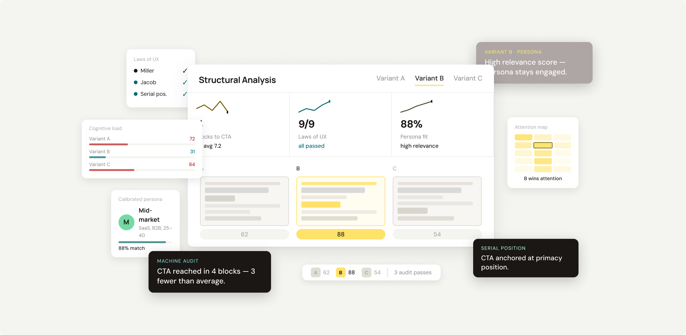
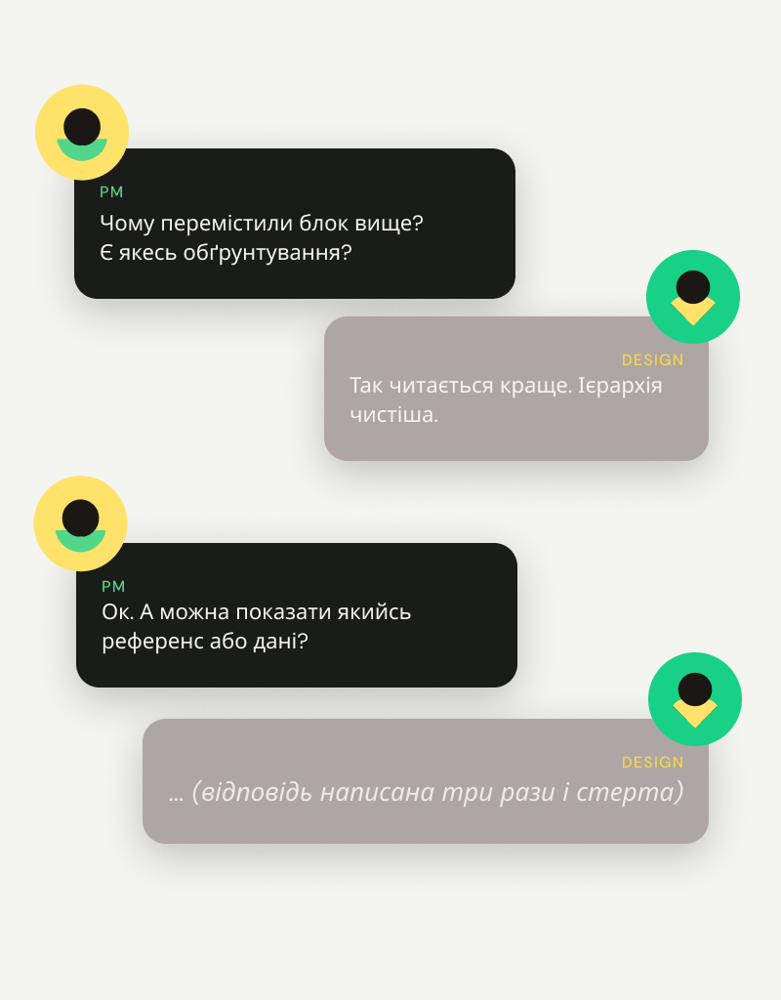
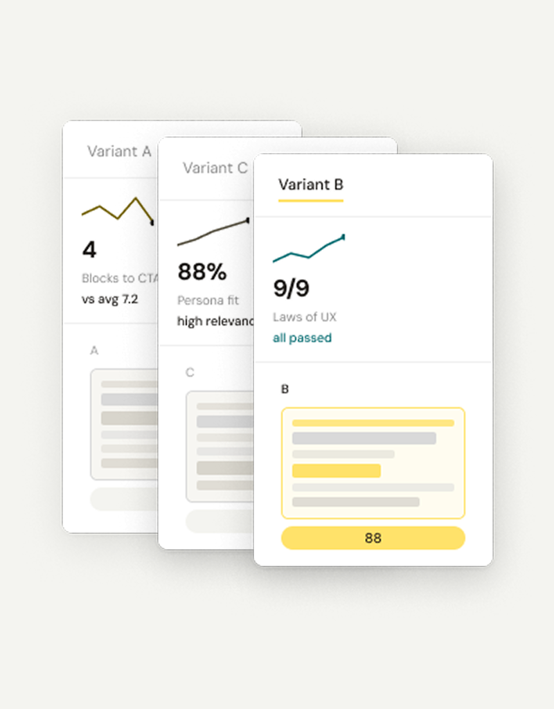

ПЕРЕВІРКА
Опишіть продукт
Категорія, аудиторія, ціль і головне — чим підкріплюється діяльність. Перше, що перевіряє система — чи тип сторінки взагалі підходить.
Опиши продукт — отримай три варіанти структури з розбором і аргументами для розмови зі стейкхолдерами.
Отримати доступ
Ви переставили блоки, і стало краще. Питання «чому саме так» лишається без відповіді, яку можна показати іншим. Референси не аргумент: у них інша аудиторія й інша задача.


Sandbox будує три варіанти на одному наборі блоків і показує, чим вони відрізняються — скільки підстав людина отримує до точки дії, як довго йде до своєї задачі, де блок перевантажений. Кожен показник із поясненням, звідки він узявся.
Мовчазного виведення немає: усе, що система додумала, показується окремо, перш ніж піти в роботу.
Категорія, аудиторія, ціль і головне — чим підкріплюється діяльність. Перше, що перевіряє система — чи тип сторінки взагалі підходить.
Система покаже задачі, блоки й зв'язок між ними. Якщо чогось бракує — підкаже, чого саме, і почекає виправлення перед генерацією.
Однаковий набір блоків, однакові тези. Різниця тільки в організації — за типом контенту, за задачею або за етапом знайомства.
Код рахує показники, персона оцінює з боку читача. Без загального балу, з джерелом для кожного твердження.
Виявляє дефекти структури: заглиблену точку дії, перевантажені блоки, задачі без місця в макеті.
Показує джерело кожного показника. Наприклад: «7 елементів у блоці — задане вами» або «крок до задачі — пораховано без порога, лише для порівняння варіантів».
Не каже, який варіант кращий взагалі — бо «краще» залежить від контексту, якого немає в структурному описі. Вибір, гібрид або новий запуск — за вами. Система нічого не відсіює сама.
Якщо код і персона розходяться — це не помилка системи, а найцінніший сигнал.
Машинна частина рахується кодом, не мовною моделлю. Результат не залежить від стану моделі й порядку варіантів.
Три закони з порогами: Міллер — однорідних елементів у блоці, серійна позиція — де стоїть блок пріоритетної задачі, Джейкоб — відхилення від конвенційного порядку.
Порівняльні показники без порогів: кроки до задачі, доказова база до дії, розкид між задачами й між аудиторіями.
Ші персона оцінює те саме з боку читача: чи зрозуміло, куди потрапив, на якій секції з'являється підстава довіряти.
Порогів для них у літературі немає — ніхто не встановлював, на якій секції має стояти точка дії. Вони показують різницю між варіантами без оцінки «добре / погано». Це заявлена межа, не недоробка.
Розходження між кодом і персоною — найінформативніше. Три різнотипні розгорнуті блоки поспіль не порушують жодного порога, і персона все одно фіксує навантаження.
Частково — і система показує, якій саме частині. Кожне твердження має джерело: задане вами, виведене системою, пораховане з порогом або без.
Не працює на застосунках, дашбордах, багатокрокових флоу, e-commerce з каталогом. Осі описують довгу сторінку з лінійним переглядом.
На коротких структурах — менше 6 блоків або менше 2 задач — не генерує три варіанти. Замість цього попереджає на вході й пропонує аудит: наявна структура плюс одна альтернатива для порівняння.
Не оцінює візуал, текст і бренд. Готовий код не потрібен — аудит виконується на структурному описі.
Персона калібрована під конкретний клас читача. Для іншого класу потрібен новий цикл калібрування — це умова використання, не рекомендація.
На свідомо зламаному варіанті 3 критичні зауваження з 4, на робочих — нуль.
Другий прогін із переставленим порядком у новій сесії дав ті самі висновки.
Персона реагує на структуру, а не на позицію.
Система скаже про це на вході. Застосунки й багатокрокові флоу — поза межами. Короткі структури не дадуть трьох варіантів, але дадуть аудит із однією альтернативою для порівняння.
З опису продукту й переліку того, чим підкріплюється діяльність. Макет не потрібен.
Калібрування: на свідомо зламаному варіанті — 3 критичні зауваження з 4, на робочих — нуль. Другий прогін із переставленим порядком у новій сесії дав ті самі висновки. Персона реагує на структуру, а не на позицію.
Один прогін на свідомо зламаному варіанті й один на робочому, з перевіркою незалежності від порядку. Одноразова дія перед першим використанням для нової аудиторії.
UX Sandbox
Надсилаємо доступ одразу після реєстрації.